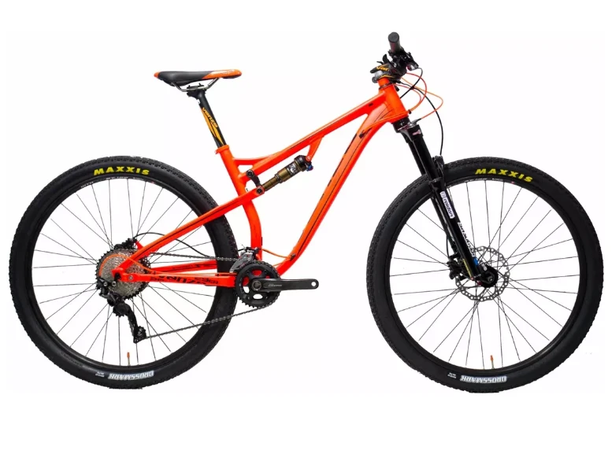
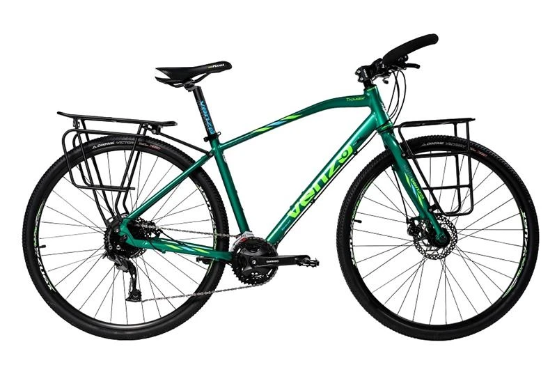
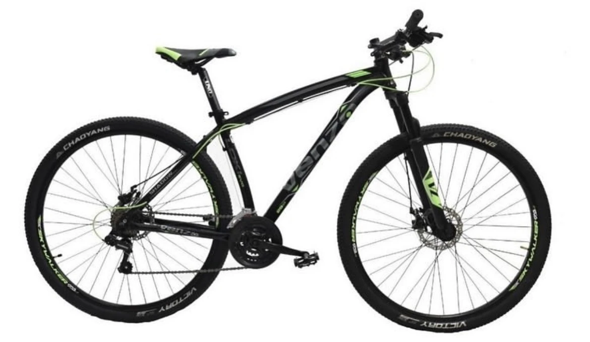

Bicicletas

Bicicleta de montaña
Venzo Exceed de aluminio 6061 para eje trasero de 12 mm BOOST con suspensión trasera FOX Float 120mm de recorrido. Especial para su recorrido sobre areas montañosas
Bicicleta de travesia
Venzo Traveler, aluminio 6061 Full Shimano 27 velocidades (opción MTB) / Full Shimano Sora 18 velocidades. Ideal para realizar travesia.
Bicicleta de ruta
Venzo X-Blaze EX monocasco de carbono 1200 grs aprox – BOOST, Fibra de Carbono con maza Novatec con rulemanes (eje delantero de 15 mm y trasero de 12 mm) con sistema BOOST. Ideal para la ruta ya que contiene un cuadro liviano.